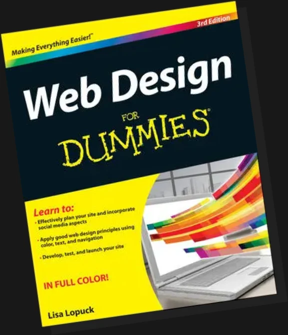
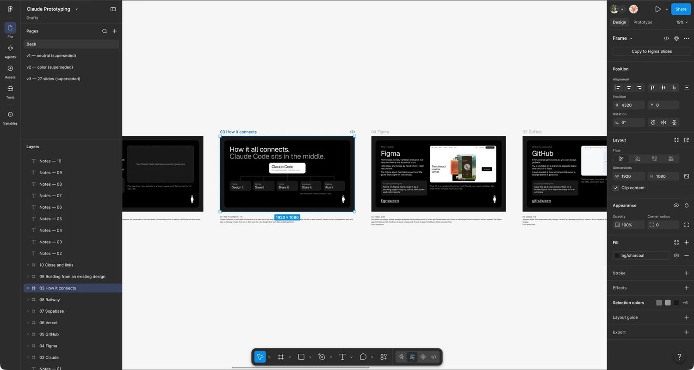
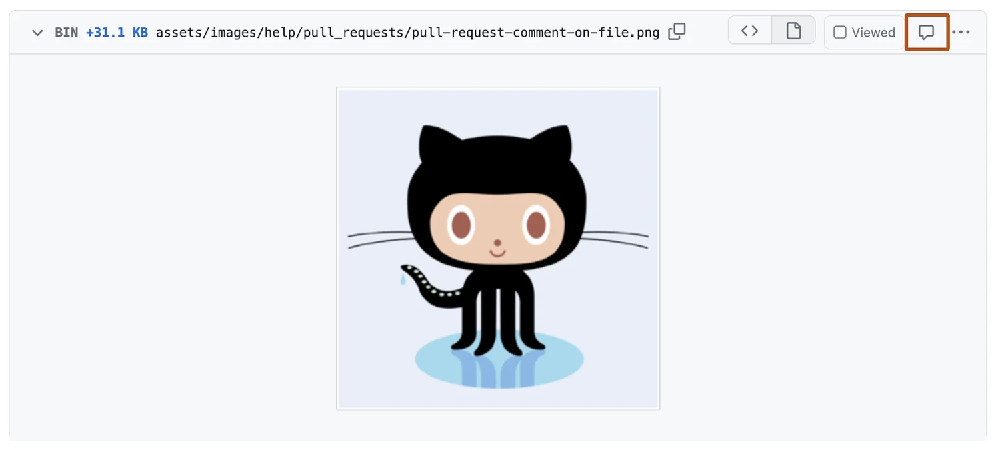
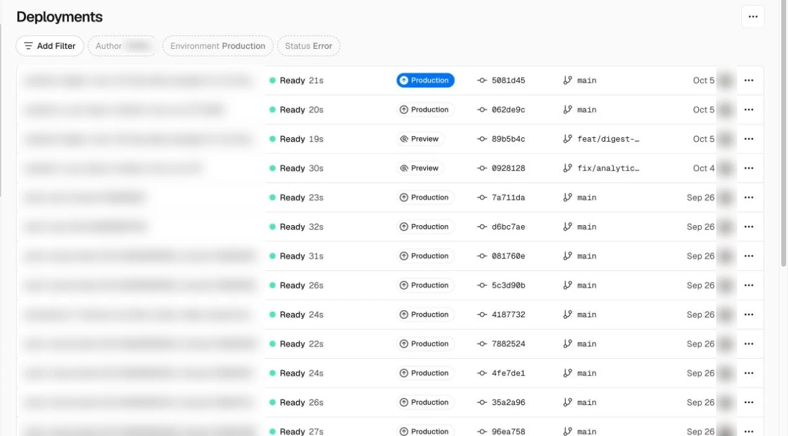
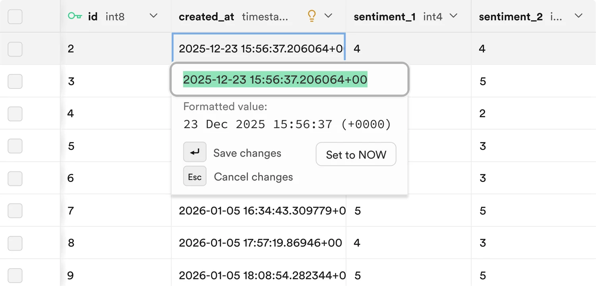
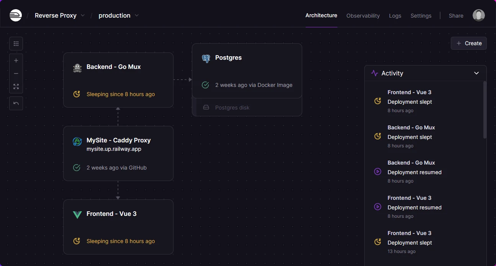

Scroll, use the nav, or press P to present
Claude Code
Build
Claude Code02 / 22
- You describe the outcome. It handles the code, git and GitHub.
- Reads your Figma frames through connectors and builds them in your project folder.
- Shows a plan, a diff and a live preview, so you review before anything ships.
Example prompt
read this figma frame, plan the build, implement it in this project, and show it in the preview
What it can do
- Reads designs
- Plans first
- Builds
- Live preview
- Reviews diffs
- Opens PRs
- Parallel sessions
Claude Code is its own thing.
Separate from Chat and Cowork.
Claude Code03 / 22
| Tab | What it’s for | What it knows |
|---|---|---|
| Chat | Everyday conversations with Claude. | Its own chat history. |
| Cowork | Dispatch and longer agentic work. | Its own tasks and history. Dispatch can start a Code session with a task. |
| Code | Building software in a project folder. | One session’s history, the project folder, CLAUDE.md and auto memory. Nothing from your Chat or Cowork conversations. |
Each tab keeps its own conversations. What I tell Chat or Cowork doesn’t carry into Code.
Connectors and skills are shared: set them up once under Customize.
Folders on your computer.
Plus its own saved context.
Claude Code04 / 22
Your folder
Project folder
Pick a folder or repo when you start a session. Claude reads, edits and runs commands there.
Worktrees
For Git projects, each session can work in its own copy under .claude/worktrees, so parallel tasks don’t collide.
Terminal
The built-in terminal opens in the same folder, with the same environment as Claude.
What it remembers
Session history
Each session has its own history, saved on your computer. A new session starts fresh.
CLAUDE.md
A file in the project with instructions you write. Claude reads it at the start of every session.
Auto memory
Notes Claude writes itself from your corrections and preferences, carried into later sessions.
What that looks like on disk
my-project/ the folder I pick
├─ CLAUDE.md instructions I write
├─ .claude/
│ ├─ worktrees/ one copy per parallel session
│ └─ settings, skills, rules
└─ …your files
~/.claude/ global settings, skills, rulesClaude Code: setup and use.
Install it. Open a folder. Go.
Claude Code05 / 22
Use it when
Any build or edit task: reading a design, changing code, running the app.
Day to day
Describe outcomes, not commands. Claude handles the files, git and tooling. Add services any time from + → Connectors.
Access it uses
Your project folder, plus whatever the permission mode and connectors allow.
How to set it up
Point at it. Say what to change.
Selections become edit requests.
Claude Code06 / 22
Select an element
Pick it in the live preview (Cmd+Shift+S), then say what to change about it.
Mark it up
Draw arrows, boxes, circles or text on the preview, then click Add to chat.
Comment on the diff
Click any line to leave a comment. Submit all your comments at once.
Attach a reference
Drop in a screenshot or mockup and say what to match.
Try it. Pick something, then say what to change.
Spring sale starts Friday
Pick anything on this page, then tell Claude what to change.
Click the heading, the paragraph or the button.
Permissions.
How much Claude asks first.
Claude Code07 / 22
| Mode | What it does |
|---|---|
| Manual | Asks before each edit and command. |
| Accept edits | Auto-accepts file edits and common file commands like mkdir and mv. Still asks before other terminal commands. |
| Plan | Reads and plans. No edits until you approve the plan. |
| Bypass permissions | Runs without permission prompts. Anthropic’s docs recommend isolated environments. Safety checks still prompt on external sites. |
Connections act with your account’s access. Each service page lists what that covers.
Press the white box to mark the two modes on the table.
How it all connects.
Claude Code sits in the middle.
How it connects08 / 22
Added when a prototype needs real data or scheduled work.
Other Connectors
- CloudflareHosting and storage
- NotionDocs and specs
Figma
Design
Figma09 / 22
- The source of truth for styles, variables, grids and components.
- Manual control where precision matters. The agent takes repetitive canvas work.
- Claude reads your frames and variable bindings, so builds inherit your tokens.
Example prompt
build this frame as a working page using my variables, text styles and components

What it can do
- Design
- Components
- Variables and styles
- Prototyping
- Collaboration
- AI agent
Figma: setup and use.
Connect once. Work from links.
Figma10 / 22
Use it when
You have a frame or design system to build from.
Day to day
Paste a frame link, ask for the build, compare it with the design, and go again in small steps. Claude reads your styles and variables too.
Access it uses
Your Figma access: reads frames, styles and variables, and can edit files you can edit.
How to set it up
GitHub
Version control
GitHub11 / 22
- Every change is versioned, so any earlier state is recoverable. Claude makes the commits.
- Branches isolate experiments. Claude creates them and merges the keepers.
- Pull requests make a change reviewable. Claude opens them and watches the checks.
Example prompt
take care of GitHub for me, and try a bolder layout so I can compare the two

What it can do
- Version history
- Branches
- Pull requests
- Collaboration
- Hosting (Pages)
- Automation (Actions)
- Issues
GitHub: I ask. Claude does.
I’m a designer, not a developer.
GitHub12 / 22
| I ask | Claude does |
|---|---|
| “take care of GitHub for me” | Creates the repo and keeps every change saved. |
| “make the hover effect less intense” | Edits the code and saves it as a new version. |
| “try a bolder version so I can compare” | Makes a branch and builds it. The original stays untouched. |
| “I like that one” | Merges that branch into the main version. |
| “go back to how it was” | Reverts to the earlier version. |
| “do whatever works” | Picks the approach, does it, and tells you what it did. |
Git, GitHub, PRs and merges are Claude’s job. Mine is the design call.
How GitHub works.
Four terms. Claude handles all of them.
GitHub13 / 22
Branch
A parallel line of work in the same repository.
Enables: trying a layout variant without touching the version that is live.
Worktree
A separate checkout of the repo, on its own branch, in its own folder.
Enables: parallel Claude sessions that can’t overwrite each other’s files.
Pull request
A proposal to merge one branch into another, shown as a diff.
Enables: review, comments and automated checks before anything lands.
Merge
Folding one branch’s changes back into another, usually main.
Enables: approved work becoming the shared version, ready for Vercel to deploy.
Claude runs all of this. You just describe the change.
GitHub: setup and use.
Connect once. No manual syncing.
GitHub14 / 22
Use it when
Any project you want versioned, shared or reviewed. Start from the first session.
Day to day
Claude makes the commits, branches and PRs, watches the checks, and can merge when they pass if the repo allows it. You review the preview and say what to change.
Access it uses
Your repo access via the connector and gh: reads and writes code, branches and PRs.
How to set it up
Vercel
Deploy
Vercel15 / 22
- Builds and hosts every branch at its own URL.
- Reviewers test the real build on real devices, with no setup.
- Claude deploys it and sends you the link.
Example prompt
deploy this branch to vercel and give me the preview url

What it can do
- Deploy
- Preview URLs
- Hosting
- Domains
- Environment variables
- Rollbacks
Vercel: setup and use.
Import the repo. Get previews.
Vercel16 / 22
Use it when
You want a shareable URL for review, or a host for the front end.
Day to day
Open the preview URL on a phone, send it for comments, and Claude ships it when it looks right. If a deploy fails, ask Claude to check the build output.
Access it uses
Your Vercel team access: deploys, and edits project settings and variables.
How to set it up
Supabase
Data and auth
Supabase17 / 22
- A hosted Postgres database, browsable and editable as a table.
- Sign-in and user management that Claude sets up for you.
- Real data to design against, including empty, loading and error states.
Example prompt
add sign-in and a favorites table to this prototype using supabase

What it can do
- Database
- Sign-in
- File storage
- Auto-generated APIs
- Realtime
- Edge functions
Supabase: setup and use.
Connect it. Keep keys in .env.
Supabase18 / 22
Use it when
The prototype needs real data, sign-in or file storage.
Day to day
Describe the data, let Claude write the migration, then open the table editor to see the rows. Use real data to design empty, loading and error states.
Access it uses
Your project access: schema, data, SQL and migrations. Can be limited to one project or read-only.
How to set it up
Railway
Hosting and scheduled tasks
Railway19 / 22
- Runs services that have to stay up: APIs, workers, databases.
- Scheduled tasks, like a nightly data refresh, that Claude sets up and deploys.
- Logs and metrics show what happened when a run fails.
Example prompt
set this up as a scheduled task that runs every morning and deploy it to railway

What it can do
- Run services
- Scheduled tasks
- Databases
- Variables
- Logs and metrics
- Deploy from GitHub
Railway: setup and use.
Deploy from the repo. Schedule it.
Railway20 / 22
Use it when
Something has to stay running or run on a schedule: an API, a worker, a nightly refresh.
Day to day
Ask Claude to write the task, set the schedule and read the logs when a run fails. Claude handles the config.
Access it uses
Your project access: deploys, variables and logs.
How to set it up
One feature, start to finish.
Then rinse and repeat.
Start to finish21 / 22
- 1
Prep the design, wireframe etc
Components, auto layout, named layers, variables, claude will read it all
- Figma
- 2
Start a session
Paste the frame link and say what you want. Connectors on.
- Claude Code
- 3
Plan, then build
Approve the plan, then watch the live preview as it builds.
- Claude Code
- 4
Check against the design
Ask for every difference from the frame. Fix in small steps.
- Claude Code
- Figma
- 5
Claude opens the PR
It pushes the branch, opens the PR and watches the checks.
- GitHub
- Vercel
- 6
Claude merges it
Once checks pass, it merges and Vercel ships it. Then the next feature.
- GitHub
- Vercel
Add Supabase for real data, Railway for scheduled tasks.
Links and docs.
Where to read more.
Start to finish22 / 22
| Tool | Docs | What’s there |
|---|---|---|
| Claude Code | code.claude.com/docs | Desktop app, worktrees, permission modes |
| Figma | developers.figma.com/docs/figma-mcp-server | The MCP server behind the Figma connector |
| GitHub | docs.github.com | Pull requests, Pages, Actions |
| Vercel | vercel.com/docs | Deployments, previews, environment variables |
| Supabase | supabase.com/docs | Database, auth, storage |
| Railway | docs.railway.com | Services, variables, cron schedules |
Screens. The Figma editor and Vercel deployments are my own windows. The GitHub, Supabase and Railway images come from each company’s public docs and site. The Claude Code video is Anthropic’s, on YouTube.
Not affiliated. This page isn’t affiliated with or endorsed by Anthropic, Figma, GitHub, Vercel, Supabase, Railway or Wiley. “For Dummies” is a trademark of John Wiley & Sons, and the cover is shown as a joke about the title.
Slides were made in Figma. This page was built with Claude Code, by someone who didn’t write the code.